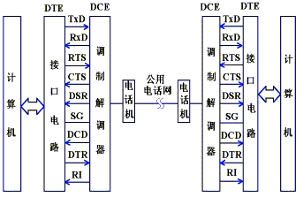
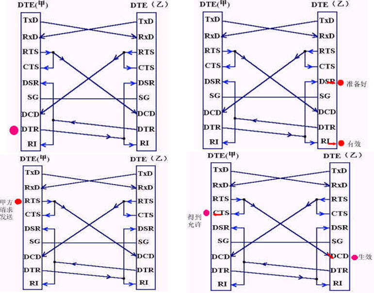
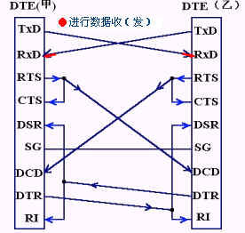
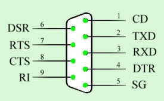
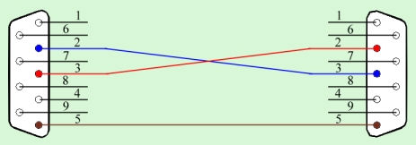
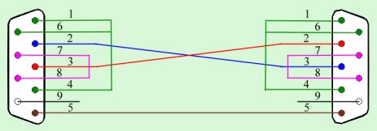
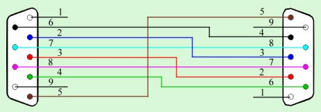

串口通信接线方法
串口通信基本接线方法
|
9针串口（DB9） |
|
|
25针串口（DB25） |
|
针号 |
功能说明 |
缩写 |
针号 |
功能说明 |
缩写 |
1 |
数据载波检测 |
DCD |
8 |
数据载波检测 |
DCD |
2 |
接收数据 |
RXD |
3 |
接收数据 |
RXD |
3 |
发送数据 |
TXD |
2 |
发送数据 |
TXD |
4 |
数据终端准备 |
DTR |
20 |
数据终端准备 |
DTR |
5 |
信号地 |
GND |
7 |
信号地 |
GND |
6 |
数据设备准备好 |
DSR |
6 |
数据准备好 |
DSR |
7 |
请求发送 |
RTS |
4 |
请求发送 |
RTS |
8 |
清除发送 |
CTS |
5 |
清除发送 |
CTS |
9 |
振铃指示 |
DELL |
22 |
振铃指示 |
DELL |
脚位 |
简写 |
意义 |
说明 |
Pin1 |
CD |
Carrier Detect |
调制解调器通知电脑有载波被侦测到。 |
Pin2 |
RXD |
Receiver |
接收数据。 |
Pin3 |
TXD |
Transmit |
发送数据。 |
Pin4 |
DTR |
Data Terminal Ready |
电脑告诉调制解调器可以进行传输。 |
Pin5 |
GND |
Ground |
地线。 |
Pin6 |
DSR |
Data Set Ready |
调制解调器告诉电脑一切准备就绪。 |
Pin7 |
RTS |
Request To Send |
电脑要求调制解调器将数据提交。 |
Pin8 |
CTS |
Clear To Send |
调制解调器通知电脑可以传数据过来。 |
Pin9 |
RI |
Ring Indicator |
调制解调器通知电脑有电话进来。 |
RS-232C的接口信号DSR DTR
RS-232C规标准接口有25条线，4条数据线、11条控制线、3条定时线、7条备用和未定义线，常用的只有9根，它们是：
（1）联络控制信号线：
数据装置准备好（Data set ready-DSR)——有效时（ON）状态，表明通信装置处于可以使用的状态。
数据终端准备好(Data set ready-DTR)——有效时（ON）状态，表明数据终端可以使用。
这两个信号有时连到电源上，一上电就立即有效。这两个设备状态信号有效，只表示设备本身可用，并不说明通信链路可以开始进行通信了，能否开始进行通信要由下面的控制信号决定。
RS-232C的接口信号RTS CTS
请求发送(Request to send-RTS)——用来表示DTE请求DCE发送数据，即当终端要发送数据时，使该信号有效（ON状态），向MODEM请求发送。它用来控制MODEM是否要进入发送状态。
允许发送（Clear to send-CTS）——用来表示DCE准备好接收DTE发来的数据，是对请求发送信号RTS的响应信号。当MODEM已准备好接收终端传来的数据，并向前发送时，使该信号有效，通知终端开始沿发送数据线TxD发送数据。
这对RTS/CTS请求应答联络信号是用于半双工MODEM系统中发送方式和接收方式之间的切换。在全双工系统中作发送方式和接收方式之间的切换。在全双工系统中，因配置双向通道，故不需要RTS/CTS联络信号，使其变高。
RS-232C的接口信号DCD RI
接收线信号检出(Received Line detection-RLSD)——用来表示DCE已接通通信链路，告知DTE准备接收数据。当本地的MODEM收到由通信链路另一端（远地）的MODEM送来的载波信号时，使RLSD信号有效，通知终端准备接收，并且由MODEM将接收下来的载波信号解调成数字两数据后，沿接收数据线RxD送到终端。此线也叫做数据载波检出(Data Carrier dectection-DCD）线。
振铃指示(Ringing-RI)——当MODEM收到交换台送来的振铃呼叫信号时，使该信号有效（ON状态），通知终端，已被呼叫。
RS-232C的接口信号 ---TxD RxD
(2）数据发送与接收线：
发送数据(Transmitted data-TxD)——通过TxD终端将串行数据发送到MODEM，(DTE→DCE)。
接收数据(Received data-RxD)——通过RxD线终端接收从MODEM发来的串行数据，(DCE→DTE)。
（3）地线
有两根线SG、PG——信号地和保护地信号线，无方向。
实际应用

NULL MORDEM 的标准接法


计算机串口通信常用连接



